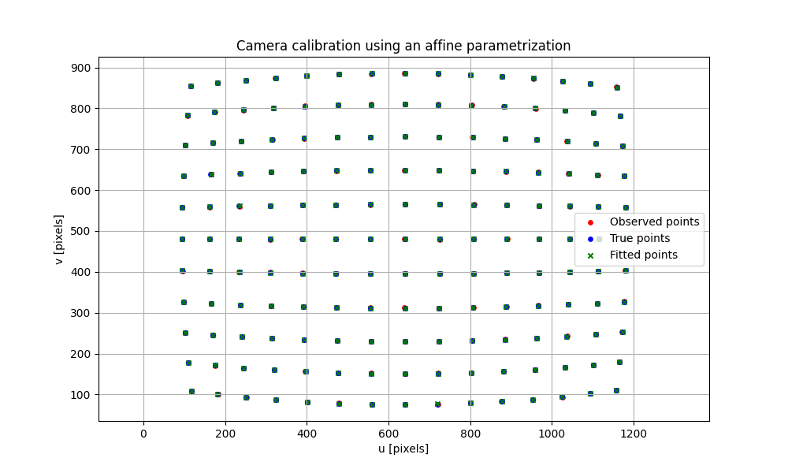

Note
Go to the end to download the full example code.
Camera calibration with affine parametrization#
This example shows how to use a parametrization with pysolve-gn.
We consider a simplified camera calibration problem in which the camera intrinsic parameters and the radial/tangential distortion parameters are estimated from synthetic image observations.
The complete camera parameter vector is:
[fx, fy, cx, cy, k1, k2, p1, p2, k3]
However, we explicitly impose the following constraints:
fx = fycx = fixedcy = fixed
Therefore, only six parameters are actually optimized:
[f, k1, k2, p1, p2, k3]
The example also shows that these constraints can be expressed using
pysolvegn.build_affine_parametrization().
Camera model#
We use the Brown-Conrady camera distortion model.
For normalized coordinates (x, y), the distorted coordinates are:
where:
The pixel coordinates are:
import numpy as np
import matplotlib.pyplot as plt
import pysolvegn
np.random.seed(0)
def camera_model(params, points):
"""
Compute distorted image coordinates.
Parameters
----------
params : array-like
Complete camera parameter vector:
[fx, fy, cx, cy, k1, k2, p1, p2, k3]
points : ndarray
Normalized image points with shape ``(n_points, 2)``.
Returns
-------
ndarray
Image coordinates with shape ``(n_points, 2)``.
"""
fx, fy, cx, cy, k1, k2, p1, p2, k3 = params
x = points[:, 0]
y = points[:, 1]
r2 = x**2 + y**2
radial = 1.0 + k1 * r2 + k2 * r2**2 + k3 * r2**3
x_distorted = x * radial + 2.0 * p1 * x * y + p2 * (r2 + 2.0 * x**2)
y_distorted = y * radial + p1 * (r2 + 2.0 * y**2) + 2.0 * p2 * x * y
u = fx * x_distorted + cx
v = fy * y_distorted + cy
return np.column_stack((u, v))
Generate synthetic calibration observations#
We assume square pixels:
and a known principal point:
Consequently, the unknown parameters are:
cx_fixed = 640.0
cy_fixed = 480.0
true_f = 850.0
true_k1 = -0.20
true_k2 = 0.05
true_p1 = 0.001
true_p2 = -0.002
true_k3 = -0.01
true_parameters = np.array(
[
true_f,
true_f,
cx_fixed,
cy_fixed,
true_k1,
true_k2,
true_p1,
true_p2,
true_k3,
]
)
# Generate normalized calibration points.
x = np.linspace(-0.7, 0.7, 15)
y = np.linspace(-0.5, 0.5, 11)
xx, yy = np.meshgrid(x, y)
normalized_points = np.column_stack(
(
xx.ravel(),
yy.ravel(),
)
)
image_points_true = camera_model(
true_parameters,
normalized_points,
)
# Add measurement noise.
image_points = image_points_true + np.random.normal(
scale=0.5,
size=image_points_true.shape,
)
Define the affine parametrization#
The solver optimizes only six parameters:
The camera model expects nine parameters:
We define the transformation:
with:
and:
Therefore:
fx = f fy = f cx = cx_fixed cy = cy_fixed
while the distortion parameters are unchanged.
modes = np.zeros((9, 6), dtype=float)
# fx = f
modes[0, 0] = 1.0
# fy = f
modes[1, 0] = 1.0
# cx and cy are fixed.
# Their rows are therefore zero.
# k1 = k1
modes[4, 1] = 1.0
# k2 = k2
modes[5, 2] = 1.0
# p1 = p1
modes[6, 3] = 1.0
# p2 = p2
modes[7, 4] = 1.0
# k3 = k3
modes[8, 5] = 1.0
offset = np.array(
[
0.0,
0.0,
cx_fixed,
cy_fixed,
0.0,
0.0,
0.0,
0.0,
0.0,
]
)
# Build the parametrization using the helper function.
parametrization = pysolvegn.build_affine_parametrization(
modes=modes,
offset=offset,
)
Define the residual#
The residual function receives the complete output parameter vector generated by the parametrization.
The solver itself only manipulates the six input parameters.
def residual_function(params):
predicted_points = camera_model(
params,
normalized_points,
)
return (predicted_points - image_points).ravel()
data_term = pysolvegn.Term.from_rJ(
residual_func=residual_function,
loss="linear",
weight=1.0,
)
Perform the calibration#
The initial guess contains only the six optimized parameters:
[f, k1, k2, p1, p2, k3]
The fixed values cx and cy are not included in p0.
initial_parameters = np.array(
[
800.0, # f
0.0, # k1
0.0, # k2
0.0, # p1
0.0, # p2
0.0, # k3
]
)
result = pysolvegn.solve(
terms=[data_term],
p0=initial_parameters,
parametrization=parametrization,
max_iteration=30,
xtol=1e-8,
ftol=1e-8,
verbosity=2,
)
print("Optimized parameters:")
print("f =", result[0])
print("k1 =", result[1])
print("k2 =", result[2])
print("p1 =", result[3])
print("p2 =", result[4])
print("k3 =", result[5])
Individual costs [rJ term]: C_i = 0.5 * ρ(||r_i||^2)
Cost: C = sum(w_i * C_i)
Step norm: ||Δp||
Optimality: ||g||
Iteration Total time (s) Cost C ΔC ||Δp||_2 ||g||_∞
0 7.806e-04 1.820e+04 3.531e+05
1 1.357e-03 4.645e+02 -1.773e+04 5.036e+01 7.587e+04
2 1.890e-03 4.029e+01 -4.242e+02 1.331e-02 6.102e-04
3 2.397e-03 4.029e+01 -5.009e-12 2.359e-06 5.756e-05
[ftol] Convergence achieved (df < ftol * F) : 5.009326287108706e-12 < 4.029126160133067e-07.
[xtol] Convergence achieved (||Δp|| < xtol * (xtol + ||p||)) : 2.3594721019156887e-06 < 8.503566580015324e-06.
Optimized parameters:
f = 850.3566317119768
k1 = -0.20312554814556025
k2 = 0.05673454287201439
p1 = 0.0010392543493466374
p2 = -0.001978258098571854
k3 = -0.014498246644596839
Recover the complete camera parameter vector#
result contains the optimized input parameters.
The complete camera parameters are obtained by applying the parametrization:
p_out = P(p_in)
estimated_parameters = parametrization.p_func(result)
print()
print("Complete camera parameters:")
print("fx =", estimated_parameters[0])
print("fy =", estimated_parameters[1])
print("cx =", estimated_parameters[2])
print("cy =", estimated_parameters[3])
print("k1 =", estimated_parameters[4])
print("k2 =", estimated_parameters[5])
print("p1 =", estimated_parameters[6])
print("p2 =", estimated_parameters[7])
print("k3 =", estimated_parameters[8])
Complete camera parameters:
fx = 850.3566317119768
fy = 850.3566317119768
cx = 640.0
cy = 480.0
k1 = -0.20312554814556025
k2 = 0.05673454287201439
p1 = 0.0010392543493466374
p2 = -0.001978258098571854
k3 = -0.014498246644596839
Verify the constraints#
The constraints are hard constraints imposed by the parametrization. They are therefore satisfied exactly, rather than approximately.
assert np.isclose(
estimated_parameters[0],
estimated_parameters[1],
)
assert np.isclose(
estimated_parameters[2],
cx_fixed,
)
assert np.isclose(
estimated_parameters[3],
cy_fixed,
)
Equivalence with the explicit affine transformation#
build_affine_parametrization implements:
p_out = modes @ p_in + offset
Therefore applying the parametrization is equivalent to directly evaluating this affine transformation.
estimated_parameters_direct = modes @ result + offset
assert np.allclose(
estimated_parameters,
estimated_parameters_direct,
)
print()
print("The parametrization is equivalent to " "modes @ parameters + offset.")
The parametrization is equivalent to modes @ parameters + offset.
Visualize the calibration result#
image_points_estimated = camera_model(
estimated_parameters,
normalized_points,
)
plt.figure(figsize=(10, 6))
plt.scatter(
image_points[:, 0],
image_points[:, 1],
label="Observed points",
color="red",
s=15,
)
plt.scatter(
image_points_true[:, 0],
image_points_true[:, 1],
label="True points",
color="blue",
s=15,
)
plt.scatter(
image_points_estimated[:, 0],
image_points_estimated[:, 1],
label="Fitted points",
color="green",
marker="x",
s=20,
)
plt.title("Camera calibration using an affine parametrization")
plt.xlabel("u [pixels]")
plt.ylabel("v [pixels]")
plt.legend()
plt.grid()
plt.axis("equal")
plt.show()

Total running time of the script: (0 minutes 0.061 seconds)